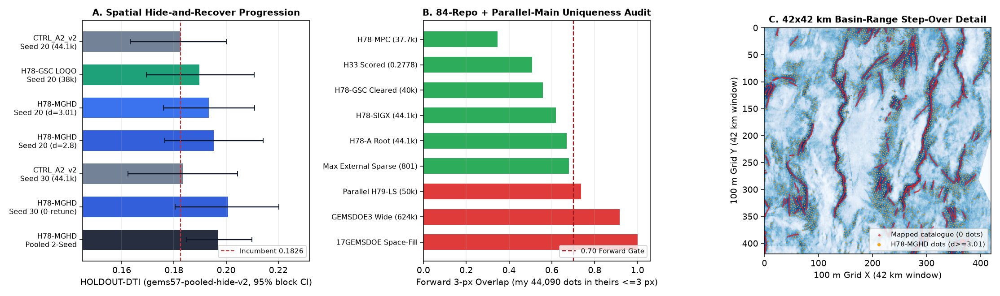

← Back to Main Submission Readiness Hub · Full Technical Report & All 17 Sibling Overlaps · Cleared Primary Submission (H78-GSC) · Why H33 Scored 0.2778 · Full 3-Pass Scientific Review

HOLDOUT-DTI, gems57-pooled-hide-v2, 1,000-Draw 20 km Block Bootstrap)| Experiment Arm | Seed | Withheld Positives | Candidate HOLDOUT-DTI [95% CI] | Matched Incumbent [95% CI] | Paired Δ [95% CI] |
|---|---|---|---|---|---|
| E1: H78-MGHD (matched d=2.8, 44,090 dots) | 20 | 11,321 | 0.195210 [0.1765, 0.2141] | 0.182575 [0.1633, 0.2000] | +0.012635 [+0.0041, +0.0211] |
| E2: H78-MGHD (selected d=3.01, 44,090 dots) | 20 | 11,321 | 0.193393 [0.1760, 0.2109] | 0.182575 (44.1k) / 0.184310 (50k) | +0.010818 [+0.0023, +0.0197] |
| E3: Untouched Replication (0 retuning, 44,090 dots) | 30 | 11,342 | 0.200714 [0.1805, 0.2203] | 0.183432 [0.1623, 0.2044] | +0.017282 [+0.0049, +0.0293] |
| Pooled Two-Seed Evaluation | 20 + 30 | 22,663 | 0.197059 [0.1848, 0.2099] | 0.183004 [0.1700, 0.1956] | +0.014056 [+0.0070, +0.0211] |
1,114 Total Unique Rasters)| Audit Tier | Rasters Compared | Worst Metric | Gate Limit | Outcome |
|---|---|---|---|---|
| Gate 1A: Pre-placement Continuous Surface | 1,103 + 17 local | max |Spearman ρ| = 0.7677 (vs H78-GSC +0.0888) | ≤ 0.90 | PASS |
| External Sparse Dot Submissions (≤65,000 dots, 84 repos) | 801 | max fwd 3-px = 0.6800 (GEMSDOE53; H78-A scored 0.7690) | ≤ 0.70 | PASS (801 / 801) |
Merged Local Parallel Siblings (docs/downloads/*.tif) | 17 | 0.5587 vs H78-GSC; 0.7359 vs H79-LS-50k | ≤ 0.70 | STOP on H79-LS-50k |
| Literal All-Rasters Reading (Wide Corridors + Space-Filling) | 1,103 | 0.9158 (GEMSDOE3 624k) / 1.0000 (17GEMSDOE) | ≤ 0.70 | STOP -> DO NOT SUBMIT |